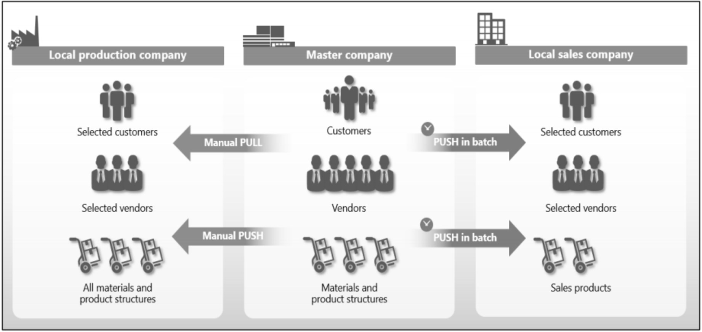
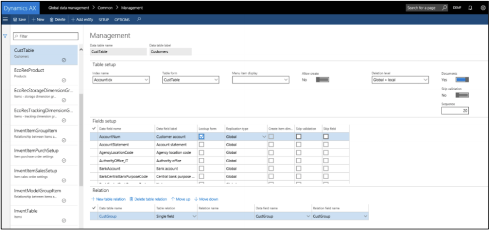
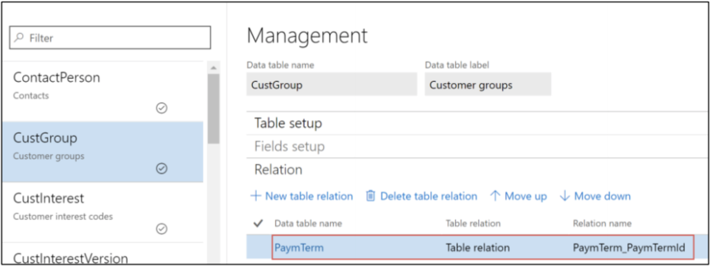
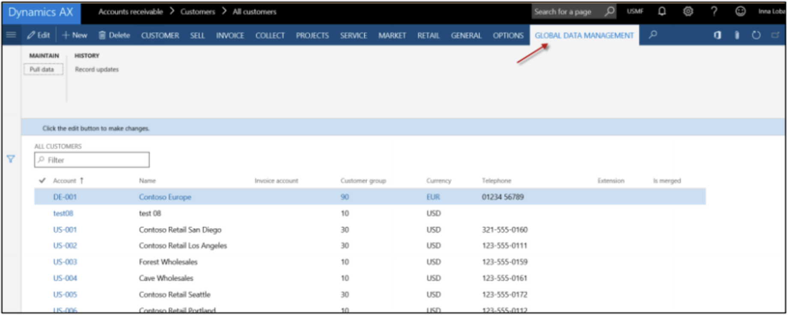
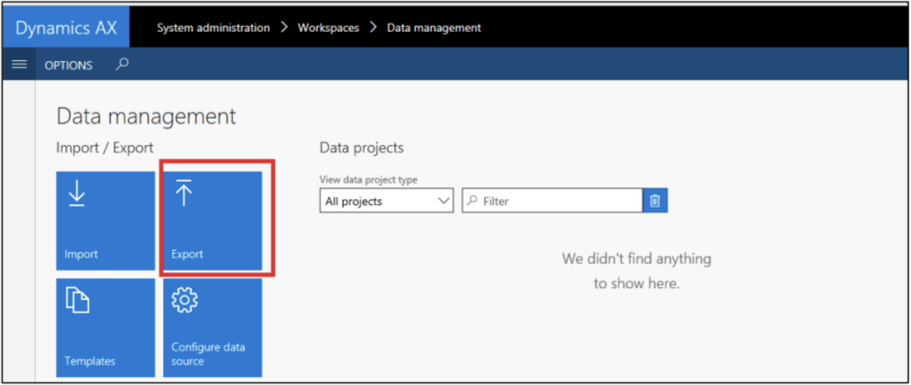
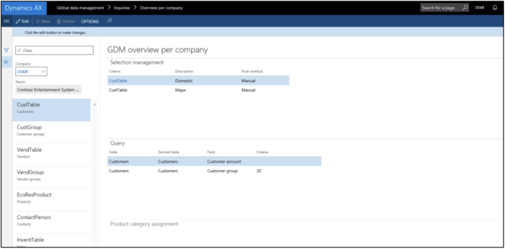

DXC Global Data Management
for Microsoft Dynamics 365
DXC Global Data Management helps ensure transparency and consistency when working with business data across your organization, while still allowing for the requirements of individual companies.
So you have the visibility, control and flexibility you need to be agile, without sacrificing data integrity.
Overview
Managing data in a uniform way across your entire organization can
improve operational efficiency and business insight. But when you
have local subsidiaries or locations with unique requirements, it
can be difficult to control and use data in a uniform and efficient
way.
DXC Global Data Management works seamlessly with
Microsoft Dynamics 365, so that you can take a one-company approach
to data governance. The generic interface allows you to replicate
data across companies in your ERP installation and to determine
centrally which information, settings, values and fields can be
created, modified and deleted by local companies ‒ so you stay in
full control of your critical global business data.
With DXC Global Data Management, you can:
- Ensure data control, integrity & transparency: With structured data governance and distribution across your business
- Balance corporate and subsidiary needs: Using flexible data access rights to enable local needs & requirements
- Improve operational efficiency and insight: Reducing manual data entry and double data entry, saving time and avoiding errors
- Define a baseline for accurate BI and reporting: With business decisions and reports that are based on accurate, valid global data
Simple set up and use
With DXC Global Data Management, you can define a single Global Data
Account that acts as a data warehouse for all the master data that
you want to replicate to other companies and locations in your
organization.
These companies can be added to Company
Groups that are connected to one or more records in the Global Data
Account.
Once a company is added to a Company Group, you can synchronize
these specific records – including master data, reference data and
parameters – with that company using a number of push and pull
distribution methods.
You can also create new companies that will be populated with a
specific set of base data from the Global Data Account when you add
them to an existing company group.
Flexible data distribution methods
With DXC Global Data Management, you have full control over how and when data is distributed. Global data can be pushed to subsidiaries when needed, or sent via batch jobs during off hours to optimise your system performance.
Structured data access and rights
In addition to defining which data each of your companies or local
subsidiaries can see, you can also control what they can do with the
data locally, based on their company type and business focus.
For example, you can define that local manufacturing
companies get only production- related data and local sales
companies receive only sales-related items.
For each company, you can define which information, settings, values
and fields they can see, which they can define or modify, and which
they can delete.
This allows local companies to make the necessary modifications they
need to meet local requirements, while still ensuring transparency,
consistency and governance when working with business data across
your organization.
Local organizations can, for example, implement relevant VAT
set-ups, or define specific payment- and delivery-terms.
Flexible set-up options
You can set up the whole solution from a single management form that consist of three Fast Tabs for setting up tables, setting up fields, and defining relationships between tables.
Table set-up
DXC Global Data Management offers full data management flexibility in any table in your system. Here you can, among other things:
- Add a new table to the Global Data Management set-up
- Define where the data in the table is maintained, and if local entities can create new records, or edit existing records, in the global data account
- Define settings for global and local deletion – with options ranging from denial of deletion to a full cascade deletion in all companies
- Duplicate attachments from the global data account to the local account
Field set-up
Here you can, among other things, define:
- Which fields are to be synchronized with local companies
- Which fields are shown in the push/pull form
- If a field can be altered in the local company, or is only editable from the global account
Relations
Here you can define processes around replication of related tables and ensure that related tables are synchronized in the correct sequence.
Synchronizing data and creating new records
Daily users in local companies have access to the solution through the ribbon on list pages or detail pages of forms that are selected in the Global Data Management table. From this ribbon, they can select single or multiple records and push or pull data between selected companies. They can also create new data records or edit existing global data records if this is allowed in the Global Data Management setup.
In addition, you can define batch jobs that push records from multiple tables at a pre- set time that is more convenient for daily business processes and workloads.
Importing and exporting Global Data Management configurations
You can export your current Global Data Management configuration as an XML file. This can then be used for backup purposes, or for importing into other systems.
Get a full overview across local companies
The solution allows you to get a full overview of the current Global Data Management set-up for all your companies. You can see which tables have been set up for a selected company and see details of the selection set-up for each table.
Learn more at www.dxc.technology
About DXC Technology DXC Technology, the world’s leading independent, end-to-end IT services company, manages and modernizes mission-critical systems, integrating them with new digital solutions to produce better business outcomes. The company’s global reach and talent, innovation platforms, technology independence and extensive partner network enable more than 6,000 private- and public-sector clients in 70 countries to thrive on change.
DXC Technology Denmark Retortvej 8 2500 Valby Denmark T +45 3614 4000© Copyright 2019 DXC Technology Company. All rights reserved.